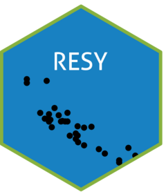

Check plot data for EUNIS classification requirements
Source:R/resy_check_eunis.R
resy_check_eunis.RdValidates that the input data frame or sf object meets the structural
requirements for EUNIS habitat classification. This is a pure check: it
reports issues without modifying data. Use resy_harmonize_eunis() to
actually enrich and prepare the data.
Checks performed:
PlotObservationIDcolumn is present.Coordinates are present and can be transformed to EPSG:25832.
Altitude (m)column is present and free ofNA.EcoregandCountrycolumns are present (or will need to be assigned).Coast_EEAandDunes_Bohncolumns are present when coastal/dune classification is relevant.
Arguments
- data
A data frame, tibble, or point
sfobject.- source_crs
Integer EPSG code of the coordinates in a plain data frame. When
NULL(default), coordinates that are all valid longitudes and latitudes are read as degrees (EPSG:4326); other coordinates need the code. Ignored whendatais ansfobject, which carries its own CRS.- verbose
Logical; if
TRUE(default), print a summary of issues.
Value
A list with:
okTRUEwhen no blocking issues were found.errorsCharacter vector of errors that will prevent classification.
warningsCharacter vector of warnings about missing or incomplete columns that
resy_harmonize_eunis()can fill automatically.
Examples
plots <- data.frame(
PlotObservationID = "plot_1",
Longitude = 8.15,
Latitude = 53.55
)
check <- resy_check_eunis(plots, source_crs = 4326, verbose = FALSE)
check$ok
#> [1] TRUE
check$warnings
#> [1] "\"Altitude (m)\" is missing. See the \"Get altitude data\" vignette; altitude rasters are available from mapsforeurope.org."
#> [2] "\"Ecoreg\" is missing and will be assigned by resy_harmonize_eunis()."
#> [3] "\"Country\" is missing and will be assigned by resy_harmonize_eunis()."
#> [4] "\"Coast_EEA\" is missing. Use run_coast_dunes = TRUE in resy_harmonize_eunis()."
#> [5] "\"Dunes_Bohn\" is missing. Use run_coast_dunes = TRUE in resy_harmonize_eunis()."